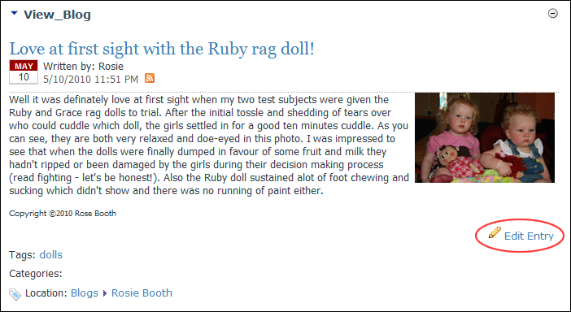
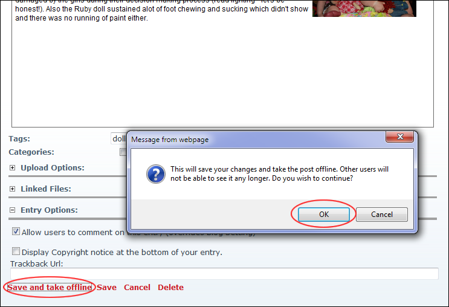
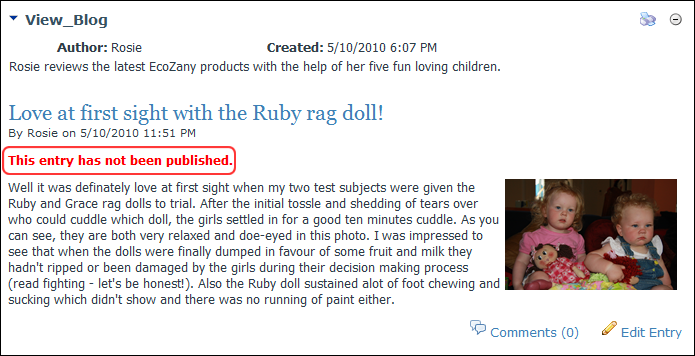

Unpublishing a Blog Entry
How to take a blog entry offline using the Blog module. This allows the entry to be removed from the website without deleting it. This task can be performed by bloggers on their own blogs and by Administrators on all blogs.
- Locate the required blog entry. See "Viewing Blog Entries for a Month", See "Viewing Blog Entries for a Single Date", or See "Viewing Recent Entries for a Single Blog".
- Click the Edit Entry link.

- Click the Save and Take Offline button. This displays the message "This will save your changes and take the post offline. Other users will not be able to see it any longer. Do you wish to continue?"
-
This displays the message "This entry is still a draft: it will not be visible to readers until it is published."

- Click the Cancel button to return to the module.

An Unpublished Blog Entry